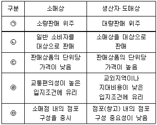
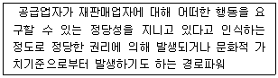
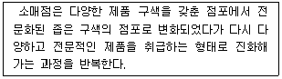
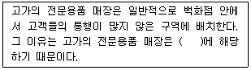
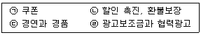
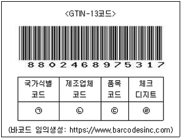
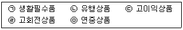
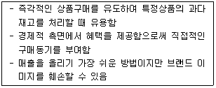

유통관리사-3급 (2021-05-15 기출문제)
1과목: 유통상식
1. 유통산업발전법〔시행 2021.1.1.〕〔법률 제17761호, 2020.12.29., 타법개정〕에서 규정한 유통산업시책의 기본방향으로 옳지 않은 것은?
- 유통산업에서의 소비자 편익의 증진
- 유통구조의 선진화 및 유통기능의 효율화 촉진
- 유통산업의 국제경쟁력 제고
- 무점포 판매의 경쟁력 제고
- 유통산업의 지역별 균형발전의 도모
(정답률: 70%)

2. 유통경로에서 중간상이 필요한 이유로 가장 옳지 않은 것은?
- 거래의 복잡성을 줄이고 거래 과정을 활성화한다.
- 소유, 장소, 시간상의 효용을 창출한다.
- 분류과정을 통한 구색상의 차이를 조정한다.
- 생산자와 소비자 모두에게 탐색의 비용을 절감해준다.
- 거래를 비정례화하여 교환거래를 역동적으로 구성한다.
(정답률: 73%)
3. 총거래수 최소의 원칙에 대한 설명으로 옳은 것은?
- 도매상을 개입시킴으로써 각 경로구성원에 의해 보관되는 제품의 총량을 감소시킬 수 있다.
- 소비자가 원하는 시간에 제품을 구매할 수 있게 한다.
- 소비자가 편리한 장소에서 제품을 구매할 수 있게 한다.
- 유통경로에서 다양하게 수행되는 기능들을 전문성을 가진 유통업체에게 맡김으로써 경제성을 강화한다.
- 중간상의 참여는 거래빈도의 수를 줄이고 이로 인한 거래비용을 낮춘다.
(정답률: 59%)
4. 직장 내에서 준수해야할 양성평등에 대한 설명으로 옳지 않은 것은?
- 단순히 남성과 여성을 고정관념으로 구분 짓기 보다 상황에 맞춰 고려해야 한다.
- 지위를 이용한 성적 언동으로 상대에게 혐오감을 느끼게 하는 행위를 해서는 안된다.
- 진정한 양성평등을 위해서는 항상 절대적 평등을 적용해야 한다.
- 성희롱 관련 상담 및 고충 처리를 위해 공식 창구를 운영해야 한다.
- 성희롱 예방교육 등을 주기적으로 실시해야 한다.
(정답률: 80%)
5. 소매업의 유형 중 편의점의 특징으로 옳지 않은 것은?
- 고객이 원하는 시간에 언제라도 구매할 수 있기 때문에 시간적 편의성이 높다.
- 고객의 접근이 용이한 지역에 위치하여 공간적 편의성이 높다.
- 구매빈도가 높고 재고회전이 빠른 생필품 위주의 제품계열을 주로 취급한다.
- 제품판매 이외의 다양한 생활편의 서비스를 제공하고 있다.
- 프랜차이즈형 편의점은 독립형 편의점에 비해 운영의 자율성이 높다.
(정답률: 80%)
6. 소매상과 생산자∙도매상의 상대적 특성 비교로 옳지 않은 것은?

- ㉠
- ㉡
- ㉢
- ㉣
- ㉤
(정답률: 78%)
7. 마케팅경로 구성원이 수행하는 기능들에 대한 설명으로 옳지 않은 것은?
- 정보 : 소비자, 생산자 그리고 거래를 계획하고 촉진하는 데 필요한 마케팅환경 영향요인에 관한 정보를 수집하고 배포함
- 촉진 : 생산자들이 제품을 적시에 제공할 수 있도록 자극함
- 접촉 : 예상되는 구매자를 탐색하고 커뮤니케이션 함
- 조정 : 상품을 구매자의 요구조건에 맞춤, 제조, 등급화, 조립, 포장하는 활동이 포함됨
- 협상 : 제품의 소유권 이전을 위해 상품의 가격과 기타 조건에 대한 합의를 이끌어냄
(정답률: 54%)
8. 일반적인 판매원의 역할에 대한 설명으로 옳지 않은 것은?
- 고객이 느끼는 제품 문제를 고객의 입장에서 이해하고 상담해주는 상담사의 역할
- 고객에게 필요한 제품과 더불어 서비스를 제공하는 서비스 제공자의 역할
- 제품에 대한 다양한 지식과 서비스를 통해 고객의 문제를 해결해주는 상담사의 역할
- 고객의 숨겨진 욕구를 발견하여 판매를 이끌어 내는 수요 창출자의 역할
- 기업의 입장에서 기업이 원하는 바를 고객에게 잘 전달하는 정보전달자의 역할
(정답률: 59%)
9. 매장의 윤리강령 중 시장 및 소비자 지향적인 내용으로 가장 옳은 것은?
- 국가 및 지역사회의 일원으로서 법규 및 규정 준수
- 협력사와의 투명하고 공정한 거래를 통해 협력관계 구축
- 직원을 독립된 인격체로 존중하고 공정한 기회 제공
- 고객만족을 위해 최고의 제품과 서비스 제공을 위해 노력
- 매장의 운영방침에 따라 각자의 맡은 직무를 충실히 수행
(정답률: 67%)
10. 수직적 유통경로를 도입하는 이유에 대한 설명으로 옳지 않은 것은?
- 유통비용을 절감하기 위해
- 혁신적인 기술을 보유하기 위해
- 자본이나 생산설비의 시너지 효과를 얻기 위해
- 경쟁자에게 효과적으로 대응하기 위해
- 원재료를 안정적으로 확보하기 위해
(정답률: 30%)
11. 소비자기본법〔시행 2019.7.1.〕[법률 제16178호,2018. 12.31., 일부개정]에서 규정하고 있는 소비자안전센터에 대한 설명으로 옳지 않은 것은?
- 소비자안전시책을 지원하기 위한 한국소비자원 소속의 센터이다.
- 소비자 권익증진·안전과 관련된 방송사업을 할 수 있다.
- 소비자안전과 관련된 교육 및 홍보를 담당한다.
- 위해 물품 등에 대한 시정 건의를 할 수 있다.
- 소비자안전에 관한 국제협력 업무를 담당한다.
(정답률: 36%)
12. 윤리경영의 주요 내용으로 옳지 않은 것은?
- 사회적 책임∙사회 공헌성
- 환경공헌성
- 청렴성∙윤리성
- 신뢰성과 열린 경영
- 위계적 노사관계
(정답률: 79%)
13. 직업윤리의 기본원칙으로 옳지 않은 것은?
- 업무의 공공성을 바탕으로 공사구분을 명확히 하는 객관성의 원칙
- 자신이 속한 기업이나 단체의 이익을 최우선으로 생각하는 성실의 원칙
- 자기업무에 전문가로서의 능력과 의식을 갖고 책임을 다하는 전문성의 원칙
- 업무를 정직하게 수행하고 본분과 약속을 지키는 정직과 신용의 원칙
- 법규를 준수하고 경쟁원리에 따라 공정하게 행동하는 공정경쟁의 원칙
(정답률: 68%)
14. 아래 글상자가 설명하는 경로파워로 옳은 것은?

- 보상력
- 강제력
- 합법력
- 준거력
- 전문력
(정답률: 51%)
15. 판매원이 갖추어야할 여러 가지 지식 중 시장지식으로 옳은 것은?
- 주문서 작성방법
- 고객의 구매성향
- 상품의 원산지
- 재고상황
- 상품의 보증기간
(정답률: 58%)
16. 도매상의 기능 중 소매상을 위한 기능으로 가장 옳지 않은 것은?
- 제품공급기능
- 구색제공기능
- 소량분할기능
- 신용재무기능
- 시장정보제공기능
(정답률: 44%)
17. 아래의 글상자가 설명하는 소매업 변천이론으로 옳은 것은?

- 진공지대이론
- 소매수명주기이론
- 변증법적 이론
- 수레바퀴이론
- 소매아코디언이론
(정답률: 57%)
18. 판매원이 가져야 할 올바른 마음가짐에 대한 설명으로 옳지 않은 것은?
- 자신의 담당 업무에서 최고가 되기 위해 정성을 다해야 한다.
- 담당 업무의 질을 높이려고 노력해야 한다.
- 판매이외에도 서비스 관련 의사결정과정에 참여하는 적극성을 가져야 한다.
- 현장 중심의 감각적인 마인드를 가져야 한다.
- 자기만의 방식을 고집해야 한다.
(정답률: 84%)
19. 유통과 관련된 설명으로 가장 옳지 않은 것은?
- 유통은 생산과 소비를 이어주는 중간 기능으로 생산품의 사회적 이동에 관계되는 모든 경제활동을 말한다.
- 매매는 생산과 소비 사이의 사회적 분리를 극복하기 위해 생산자로부터 상품을 구입하고 소비자에게 판매함으로써 상품의 소유권을 이전시키는 기본적인 기능이다.
- 운송은 생산과 소비 사이의 장소적 분리를 극복하기 위해 생산지에서 소비지까지 상품을 운송하는 것을 말한다.
- 보관은 내용물에 대한 식별을 가능하게 하고 제품자체를 보호하며, 수송 중 환경오염으로부터 보호하는 기능을 포함한다.
- 정보전달은 생산자와 소비자 간의 정보를 수집 · 전달하여 상호 의사소통을 원활하게 해준다.
(정답률: 56%)
20. 판매원의 매장 내에서의 역할로 옳지 않은 것은?
- 판매원은 일련의 판매과정을 통해 상품 판매를 성사시키기 위해 노력한다.
- 판매원은 고객에게 자사의 제품과 서비스에 대해 정보를 전달한다.
- 판매원은 고객의 관심사보다는 판매자의 입장에서 구매를 설득한다.
- 판매원은 고객의 관심사를 대변하고 소비자와 판매자관계를 관리한다.
- 판매원은 고객에게 서비스를 제공하고, 일상적인 마케팅정보 수집 업무를 수행한다.
(정답률: 77%)
2과목: 판매 및 고객관리
21. 고객의 구매과정 순서로 옳은 것은?
- 채널, 점포, 서비스에 대한 정보탐색 – 욕구인식 - 채널, 점포, 서비스 대안 평가 – 구매 - 구매후 평가
- 채널, 점포, 서비스에 대한 정보탐색 - 채널, 점포, 서비스 대안 평가 – 욕구인식 – 구매 - 구매후 평가
- 욕구인식 - 채널, 점포, 서비스에 대한 정보탐색 - 채널, 점포, 서비스 대안 평가 – 구매 - 구매후 평가
- 욕구인식 - 채널, 점포, 서비스 대안 평가 - 채널, 점포, 서비스에 대한 정보탐색 – 구매 - 구매후 평가
- 채널, 점포, 서비스에 대한 정보탐색 – 구매 – 채널, 점포, 서비스 대안 평가 – 욕구인식 - 구매후 평가
(정답률: 64%)
22. 소비자의 점포 선택 행동에 대한 설명으로 가장 옳지 않은 것은?
- 소매기업의 인지도와 그 소매기업 점포수 등에 따라 점포선택이 달라진다.
- 점포 인테리어, 매장 청결성 등이 점포 선택에 영향을 미친다.
- 점포까지의 거리 및 주차시설 등의 점포이용 편리성이 점포선택에 영향을 준다.
- 점포가 제공하는 상품 다양성이나 품질에 따라 선택하는 점포가 달라진다.
- 점포의 입점유형이 점포선택의 주요 기준이 된다.
(정답률: 67%)
23. 고객응대 전화매너에 대한 설명으로 옳지 않은 것은?
- 전화를 받을 때는 인사말과 함께 받는 사람의 소속과 이름을 정확히 말한다.
- 답변이나 상담은 명확하고 상세하게 설명하되, 고객이 이해했는지 여부를 확인할 필요는 없다.
- 고객문의 사항에 대해서는 전화를 처음 받은 직원이 끝까지 안내하는 것이 일반적인 원칙이다.
- 받은 전화를 다른 직원에게 연결할 경우에는 사전 양해를 구한 후 해당 업무 담당자의 소속, 성명, 전화번호를 알려드린 다음 연결한다.
- 문의사항 안내가 끝난 뒤 전화를 끊을 때에는 고객이 끊은 것을 확인하고 수화기를 내려놓는 것이 좋다.
(정답률: 73%)
24. 아래 글상자의 ( )안에 들어갈 용어로서 가장 옳은 것은?

- 특선품구역
- 판매촉진구역
- 독립입지구역
- 목적구매구역(행선지구역)
- 고객서비스구역
(정답률: 58%)
25. 고객의 주의를 끌기 위해 활용할 수 있는 특선품구역(feature areas)으로 가장 옳지 않은 것은?
- 곤돌라 진열대
- 쇼윈도우
- 자유진열대
- 판매촉진구역
- 계산대(POS)구역
(정답률: 35%)
26. 점포배치 중 격자형 레이아웃에 대한 설명으로 옳지 않은 것은?
- 주된 통로를 중심으로 여러 매장의 입구가 연결되어 있고, 고객들이 쉽게 여러 매장으로 들어갈 수 있도록 배려한 점포배치 방법이다.
- 매장 전체를 한 눈에 둘러보고 자기가 원하는 물건을 쉽게 찾길 바라는 고객들에게 적합하다.
- 통로를 따라 진열대, 곤돌라, 쇼케이스 등의 진열기구가 직각으로 놓여 진 배치이다.
- 다른 배치 형태에 비하여 공간 낭비도 줄일 수 있고, 내부시설이 일반적인 규격으로 표준화되어 있어 비용면에서도 효과적이다.
- 제약 중 하나는 점포의 모든 상품이 고객들에게 노출되지 않는다는 점이다.
(정답률: 33%)
27. 서점에서는 보통 판타지, 로맨스, 여행, 요리, 자기개발, 비즈니스 등 주제별로 부문(sections)을 나누고 관련 서적들을 진열하는데, 이 진열방법의 명칭으로 가장 옳은 것은?
- 적재 진열
- 전면 진열
- 수평적 진열
- 스타일/품목별 진열
- 아이디어지향형 진열
(정답률: 75%)
28. 효과적인 디스플레이 방법에 대한 설명으로 가장 옳지 않은 것은?
- 같은 품목 별로, 같은 스타일 별로 상품을 분류한다.
- 판매되어 빠진 상품은 바로 보충하도록 한다.
- 샘플을 진열하여 구매 상품을 미리 만져 보기 쉽도록 한다.
- 항상 큰 것을 맨 위에 배치한다.
- 진열 유효 범위인 골든 스페이스를 활용하여 디스플레이한다.
(정답률: 78%)
29. 고객을 위한 대기시간 관리전략으로 옳지 않은 것은?
- 서비스 창구나 판매직원을 추가배치하여 원활한 서비스를 제공하도록 한다.
- 대기고객이 순서에 따라 준비된 창구로 이동하게 하여 서비스를 제공하도록 한다.
- 대기시간이 길어진 이유에 대해 안내하고 설명한다.
- 대기 공간을 쾌적하게 유지한다.
- 불만을 표출하는 고객들에게 우선적으로 서비스를 제공한다.
(정답률: 83%)
30. 판매촉진 중 소비자 촉진 유형을 모두 고른 것으로 가장 옳은 것은?

- ㉠, ㉡
- ㉠, ㉢
- ㉠, ㉡, ㉢
- ㉠, ㉡, ㉣
- ㉡, ㉢, ㉣
(정답률: 71%)
31. 고객과 대화를 할 때 종업원의 기본예절로 가장 옳지 않은 것은?
- 알아듣기 쉬운 표준말을 사용한다.
- 발음을 명확하게 하고 말끝을 흐리지 않는다.
- 고객에 대한 존중의 의미로 사물존칭을 사용한다.
- 전문용어는 남발하지 않는다.
- 지나치게 큰소리 또는 속삭이듯 작은 소리로 이야기 하지 않는다.
(정답률: 79%)
32. POS(point of sales) 데이터에 대한 설명으로 옳지 않은 것은?
- 소매점에서 계산대에 설치된 스캐너로 판매된 상품의 바코드를 읽음으로써 수집되는 데이터를 가리킨다.
- 이 데이터에는 판매된 상품의 고유번호, 수량, 시각, 가격 등이 포함된다.
- 일부 업체에서는 판매원으로 하여금 구매자의 성별과 추정된 연령까지 입력하도록 하고 있다.
- 이 데이터를 분석함으로써 소매점은 여러 가지 유용한 정보를 얻을 수 있다.
- 바코드와 판매시점관리인 POS시스템은 동일한 것으로 간주해도 된다.
(정답률: 56%)
33. 바코드 구조 관련 아래 글상자 ㉠, ㉡, ㉢, ㉣에 기재될 사항으로 가장 옳은 것은?

- ㉠ 880, ㉡ 246897, ㉢ 531, ㉣ 7
- ㉠ 88, ㉡ 02468, ㉢ 9753, ㉣ 17
- ㉠ 880, ㉡ 24689, ㉢ 753, ㉣ 17
- ㉠ 88, ㉡ 024689, ㉢ 7531, ㉣ 7
- ㉠ 8802, ㉡ 4689, ㉢ 7531, ㉣ 7
(정답률: 50%)
34. 매장계획 시 평면계획과 동선계획으로 옳지 않은 것은?
- 고객의 유동성과 체류시간을 고려하여 혼잡도를 최소화할 수 있게 동선의 폭을 설정해야 한다.
- 관련 품목의 구매를 촉진하기 위해서는 관련되는 상품을 군집화 하여야 한다.
- 매장의 깊이는 상품의 성격과 진열방법, 집기의 크기를 고려하여 설정해야 한다.
- 매장의 벽면은 고객동선에서 고객시선과 직교하게 하여야 한다.
- 고객의 동선은 구매결정을 신속하게 할 수 있도록 짧게 구성하는 것이 효과적이다.
(정답률: 65%)
35. 제조업자가 소비자를 대상으로 구매 후 일정액을 환불해 주는 판매촉진의 기법으로 옳은 것은?
- 협동광고
- 교육훈련
- 리베이트
- 판매경진대회
- 보너스
(정답률: 80%)
36. 아래 글상자 상품분류 중 편의품과 관련이 있는 상품군을 모두 고른 것은?

- ㉠, ㉢
- ㉠, ㉡
- ㉠, ㉣, ㉤
- ㉡, ㉢, ㉣
- ㉢, ㉣, ㉤
(정답률: 75%)
37. 상품은 핵심상품, 실체상품, 확장상품 등 세 가지 차원으로 구분된다. 다음 중 확장상품에 해당하는 것은?
- 상품기능
- 품질보증
- 브랜드명
- 상품속성
- 상품디자인
(정답률: 53%)
38. 전자 플래노그램(electronic planograms)에 대한 설명으로 가장 옳은 것은?
- 유통경로의 길이를 줄여줄 수 있다.
- 판촉 방식 대비 매출의 효율성을 분석할 수 있다.
- 상품들의 진열방식을 결정하는데 도움을 줄 수 있다.
- 표준규격으로 포장된 상품들에만 적용할 수 있다.
- 다차원적 상품 진열도구들을 사용하는 경우에는 활용할 수 없다.
(정답률: 44%)
39. 고객관계관리(CRM)의 중요성에 대한 설명 중 옳지 않은 것은?
- 고객 유지보다는 고객획득에 중점을 둔다.
- 시장점유율보다는 고객점유율에 비중을 둔다.
- 상품 판매보다는 고객과의 관계에 중점을 둔다.
- 기업의 입장보다 고객의 입장에서 상품을 판매한다.
- 20%의 우수 고객이 80%의 일반 고객보다 기업의 수익에 더 큰 도움을 줄 수 있다.
(정답률: 66%)
40. 서비스 품질에 대한 설명으로 옳지 않은 것은?
- 고객은 제공받는 서비스에 대한 지각과 기대와의 비교를 통해 서비스를 평가한다.
- 서비스 수준을 평가할 때, 신뢰성, 반응성, 확신성, 공감성, 유형성을 포함한 서비스 품질 측정도구를 활용하여 평가한다.
- 서비스 품질 관리를 통해 고객만족을 이끌어낼 수 있다.
- 유형성은 물리적인 시설 장비 등의 외형적인 부분을 의미한다.
- 고객은 지각한 서비스 품질이 기대수준과 같거나 높을 때 불만족하게 된다.
(정답률: 72%)
41. 판매담당자가 판매결정(closing the sale) 단계에 취해야 하는 기본자세로 가장 옳지 않은 것은?
- 판매가 성공할 것이라는 자신감과 태도로서 고객을 응대해야 한다.
- 판매결정은 궁극적으로 판매자에 의해 이루어짐을 인지해야 한다.
- 고객에게 지금이 구매의 최고 적기라는 강한 근거를 제시한다.
- 고객이 원하는 방법으로 판매결정을 시도한다.
- 신중하지만 신속한 판매종결이 이루어지도록 시도되어야 한다.
(정답률: 50%)
42. 고객을 대하는 종업원의 자세로 가장 옳지 않은 것은?
- 고객을 판매의 대상으로 볼 것이 아니라 상생의 파트너로 생각해야 한다.
- 고객이 원하는 것을 구매할 수 있게 도움을 주어야 한다.
- 고객의 욕구파악보다 제품에 대한 세부정보 전달에 많은 시간을 할애한다.
- 고객은 제품을 구매하는 것은 좋아하지만, 판매당하는 것은 싫어한다.
- 고객은 제품 그 자체가 아닌 제품이 주는 가치를 구매함을 인지하여야 한다.
(정답률: 74%)
43. 아래 글상자에서 설명하는 판매촉진 방법으로 옳은 것은?

- 경품 제공
- 샘플 제공
- 전단지 배포
- 회원제도
- 가격 할인
(정답률: 71%)
44. 고객이 소매점의 서비스를 평가하는데 사용하는 유형적(tangible) 단서로서 가장 옳은 것은?
- 점포 외관
- 종업원의 친절함
- 서비스의 신속성
- 대금청구의 정확성
- 영업시간의 편리성
(정답률: 53%)
45. SERVQUAL 모형에 기반한 판매직원의 서비스 품질 평가에 대한 내용으로 가장 옳지 않은 것은?
- 약속한 서비스를 제공하여 고객이 신뢰성을 가질 수 있게 했는가를 평가한다.
- 제품에 대한 지식과 예절 있는 행동으로 판매원에 대한 확신성을 갖게했는가를 평가한다.
- 고객에게 개별적인 배려와 관심을 표현하는 공감성을 갖추었는가를 평가한다.
- 고객에게 언제든지 즉각 준비된 서비스를 제공하겠다는 대응성을 가졌는가를 평가한다.
- 고객에 대한 외부 커뮤니케이션과 매장 내 체험이 동일하도록 일치성을 보였는가를 평가한다.
(정답률: 62%)